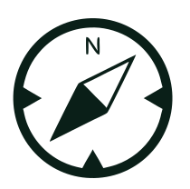
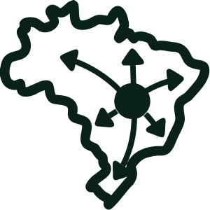
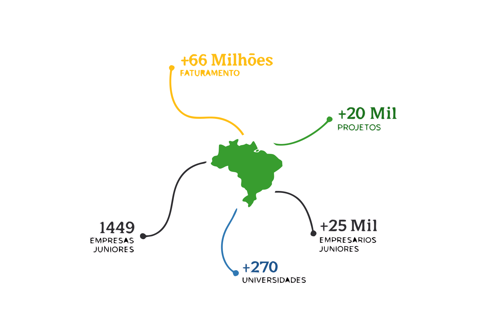

Missão

Desenvolver os membros através do empreendedorismo, criando soluções inovadoras por meio da eletrônica e do software, com o objetivo de gerar maior impacto na sociedade.
Conectando o conhecimento acadêmico ao mercado, um projeto de cada vez.
A EletronJun nasceu do desejo de estudantes de Engenharia Eletrônica e Engenharia de Software da Universidade de Brasília de transformar o conhecimento acadêmico em soluções reais para o mercado. Desde a fundação, já desenvolvemos dezenas de projetos, unindo teoria e prática para entregar resultados que fazem a diferença para nossos clientes.

Desenvolver os membros através do empreendedorismo, criando soluções inovadoras por meio da eletrônica e do software, com o objetivo de gerar maior impacto na sociedade.

Ser referência nacional em soluções tecnológicas, desenvolvendo projetos inovadores em eletrônica e software que impactem positivamente a sociedade.
Profissionalismo, senso de pertencimento, persistência e inovação.

Criado na França, o Movimento das Empresas Juniores (MEJ) é um empreendimento que não tem fins lucrativos e visa fornecer uma vivência empresarial para os universitários.
No Brasil, a primeira empresa júnior foi fundada em 1988, em São Paulo. Hoje, nosso país tem a maior concentração de empresas juniores do planeta: são 243 reconhecidas pela Confederação Brasileira de Empresas Juniores, a Brasil Júnior.